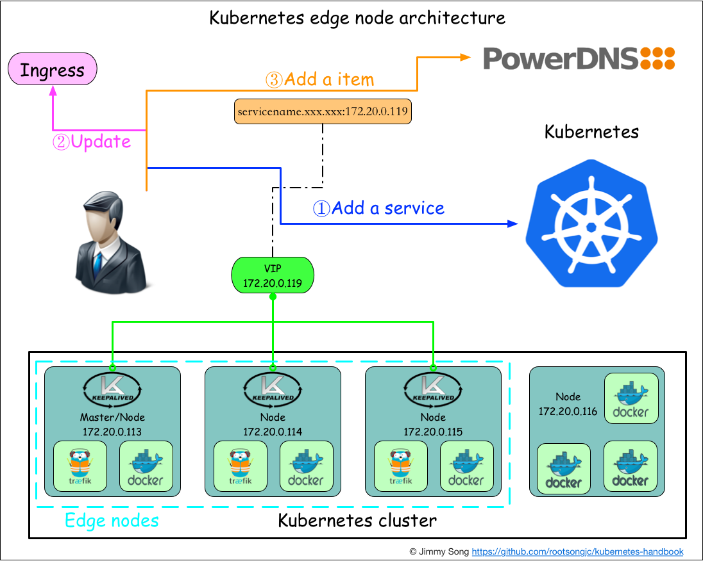

边缘节点配置
前言
为了配置kubernetes中的traefik ingress的高可用，对于kubernetes集群以外只暴露一个访问入口，需要使用keepalived排除单点问题。本文参考了kube-keepalived-vip，但并没有使用容器方式安装，而是直接在node节点上安装。
定义
首先解释下什么叫边缘节点（Edge Node），所谓的边缘节点即集群内部用来向集群外暴露服务能力的节点，集群外部的服务通过该节点来调用集群内部的服务，边缘节点是集群内外交流的一个Endpoint。
边缘节点要考虑两个问题
- 边缘节点的高可用，不能有单点故障，否则整个kubernetes集群将不可用
- 对外的一致暴露端口，即只能有一个外网访问IP和端口
架构
为了满足边缘节点的以上需求，我们使用keepalived来实现。
在Kubernetes中添加了service的同时，在DNS中增加一个记录，这条记录需要跟ingress中的host字段相同，IP地址即VIP的地址，本示例中是172.20.0.119，这样集群外部就可以通过service的DNS名称来访问服务了。
选择Kubernetes的三个node作为边缘节点，并安装keepalived，下图展示了边缘节点的配置，同时展示了向Kubernetes中添加服务的过程。

准备
复用kubernetes测试集群的三台主机。
172.20.0.113
172.20.0.114
172.20.0.115
安装
使用keepalived管理VIP，VIP是使用IPVS创建的，IPVS 已经成为linux内核的模块，不需要安装
LVS的工作原理请参考：http://www.cnblogs.com/codebean/archive/2011/07/25/2116043.html
不使用镜像方式安装了，直接手动安装，指定三个节点为边缘节点（Edge node）。
因为我们的测试集群一共只有三个node，所有在在三个node上都要安装keepalived和ipvsadmin。
yum install keepalived ipvsadm
配置说明
需要对原先的traefik ingress进行改造，从以Deployment方式启动改成DeamonSet。还需要指定一个与node在同一网段的IP地址作为VIP，我们指定成172.20.0.119，配置keepalived前需要先保证这个IP没有被分配。。
- Traefik以DaemonSet的方式启动
- 通过nodeSelector选择边缘节点
- 通过hostPort暴露端口
- 当前VIP漂移到了172.20.0.115上
- Traefik根据访问的host和path配置，将流量转发到相应的service上
配置keepalived
参考基于keepalived 实现VIP转移，lvs，nginx的高可用，配置keepalived。
keepalived的官方配置文档见：http://keepalived.org/pdf/UserGuide.pdf
配置文件/etc/keepalived/keepalived.conf文件内容如下：
! Configuration File for keepalived
global_defs {
notification_email {
root@localhost
}
notification_email_from kaadmin@localhost
smtp_server 127.0.0.1
smtp_connect_timeout 30
router_id LVS_DEVEL
}
vrrp_instance VI_1 {
state MASTER
interface eth0
virtual_router_id 51
priority 100
advert_int 1
authentication {
auth_type PASS
auth_pass 1111
}
virtual_ipaddress {
172.20.0.119
}
}
virtual_server 172.20.0.119 80{
delay_loop 6
lb_algo loadbalance
lb_kind DR
nat_mask 255.255.255.0
persistence_timeout 0
protocol TCP
real_server 172.20.0.113 80{
weight 1
TCP_CHECK {
connect_timeout 3
}
}
real_server 172.20.0.114 80{
weight 1
TCP_CHECK {
connect_timeout 3
}
}
real_server 172.20.0.115 80{
weight 1
TCP_CHECK {
connect_timeout 3
}
}
}
Realserver的IP和端口即traefik供外网访问的IP和端口。
将以上配置分别拷贝到另外两台node的/etc/keepalived目录下。
我们使用转发效率最高的lb_kind DR直接路由方式转发，使用TCP_CHECK来检测real_server的health。
设置keepalived为开机自启动：
chkconfig keepalived on
启动keepalived
systemctl start keepalived
三台node都启动了keepalived后，观察eth0的IP，会在三台node的某一台上发现一个VIP是172.20.0.119。
$ ip addr show eth0
2: eth0: <BROADCAST,MULTICAST,UP,LOWER_UP> mtu 1500 qdisc mq state UP qlen 1000
link/ether f4:e9:d4:9f:6b:a0 brd ff:ff:ff:ff:ff:ff
inet 172.20.0.115/17 brd 172.20.127.255 scope global eth0
valid_lft forever preferred_lft forever
inet 172.20.0.119/32 scope global eth0
valid_lft forever preferred_lft forever
关掉拥有这个VIP主机上的keepalived，观察VIP是否漂移到了另外两台主机的其中之一上。
改造Traefik
在这之前我们启动的traefik使用的是deployment，只启动了一个pod，无法保证高可用（即需要将pod固定在某一台主机上，这样才能对外提供一个唯一的访问地址），现在使用了keepalived就可以通过VIP来访问traefik，同时启动多个traefik的pod保证高可用。
配置文件traefik.yaml内容如下：
apiVersion: extensions/v1beta1
kind: DaemonSet
metadata:
name: traefik-ingress-lb
namespace: kube-system
labels:
k8s-app: traefik-ingress-lb
spec:
template:
metadata:
labels:
k8s-app: traefik-ingress-lb
name: traefik-ingress-lb
spec:
terminationGracePeriodSeconds: 60
hostNetwork: true
restartPolicy: Always
serviceAccountName: ingress
containers:
- image: traefik
name: traefik-ingress-lb
resources:
limits:
cpu: 200m
memory: 30Mi
requests:
cpu: 100m
memory: 20Mi
ports:
- name: http
containerPort: 80
hostPort: 80
- name: admin
containerPort: 8580
hostPort: 8580
args:
- --web
- --web.address=:8580
- --kubernetes
nodeSelector:
edgenode: "true"
注意，我们使用了nodeSelector选择边缘节点来调度traefik-ingress-lb运行在它上面，所有你需要使用：
kubectl label nodes 172.20.0.113 edgenode=true
kubectl label nodes 172.20.0.114 edgenode=true
kubectl label nodes 172.20.0.115 edgenode=true
给三个node打标签。
查看DaemonSet的启动情况：
$ kubectl -n kube-system get ds
NAME DESIRED CURRENT READY UP-TO-DATE AVAILABLE NODE-SELECTOR AGE
traefik-ingress-lb 3 3 3 3 3 edgenode=true 2h
现在就可以在外网通过172.20.0.119:80来访问到traefik ingress了。
使用域名访问Kubernetes中的服务
现在我们已经部署了以下服务：
- 三个边缘节点，使用Traefik作为Ingress controller
- 使用keepalived做的VIP（虚拟IP）172.20.0.119
这样在访问该IP的时候通过指定不同的Host来路由到kubernetes后端服务。这种方式访问每个Service时都需要指定Host，而同一个项目中的服务一般会在同一个Ingress中配置，使用Path来区分Service已经足够，这时候只要为VIP（172.20.0.119）来配置一个域名，所有的外部访问直接通过该域名来访问即可。
如下图所示：